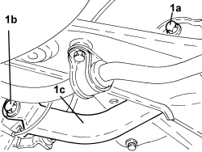
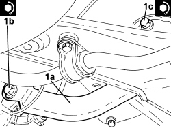

4420B16 REAR SUSPENSION FRONT TRACK CONTROL ARM (ONE), LEFT OR RIGHT - R.R. - CHECK WHEEL GEOMETRY SEPARATELY
- Path
- Procedures > 44 SUSPENSION AND WHEELS > 4420 REAR SUSPENSION > 4420B REAR SUSPENSION TRACK CONTROL ARMS > 4420B16 REAR SUSPENSION FRONT TRACK CONTROL ARM (ONE), LEFT OR RIGHT - R.R. - CHECK WHEEL GEOMETRY SEPARATELY
- Kind
- repair procedure (removal / refitting; the operation number is the code)
- Applies to
- all engines; all production periods
- Interactive page
- https://sloeber94.github.io/elrnDB-aBrrSpdr/en/#/946002212
Applies to: all engines; all production periods
 Removing
Removing
 Refitting
Refitting- Position the vehicle on a lift.
Op. 4420D42 REAR SUSPENSION CROSSMEMBER - R.R. - CHECK WHEEL GEOMETRY SEPARATELY
1. Unscrew the bolt (1a), bolt (1b) and remove the rear suspension front wishbone (1c).

Applies to: all engines; all production periods
Refitting
Removing1. Refit the rear suspension front wishbone (1a) and secure by tightening new bolts (1b) and (1c) to the specified torque.
Component | Fastening | dia | Value (daNm) | Validity |
|---|---|---|---|---|
Wheel strut side camber rod | Bolt | M12 | 7.8 ÷ 9.3 + 30° |
Component | Fastening | dia | Value (daNm) | Validity |
|---|---|---|---|---|
Crossmember side camber rod | Bolt (to be replaced) | M12 | 7.2 ÷ 8.8 + 90° |

Applies to: all engines; all production periods
- Remove the vehicle from the lift.